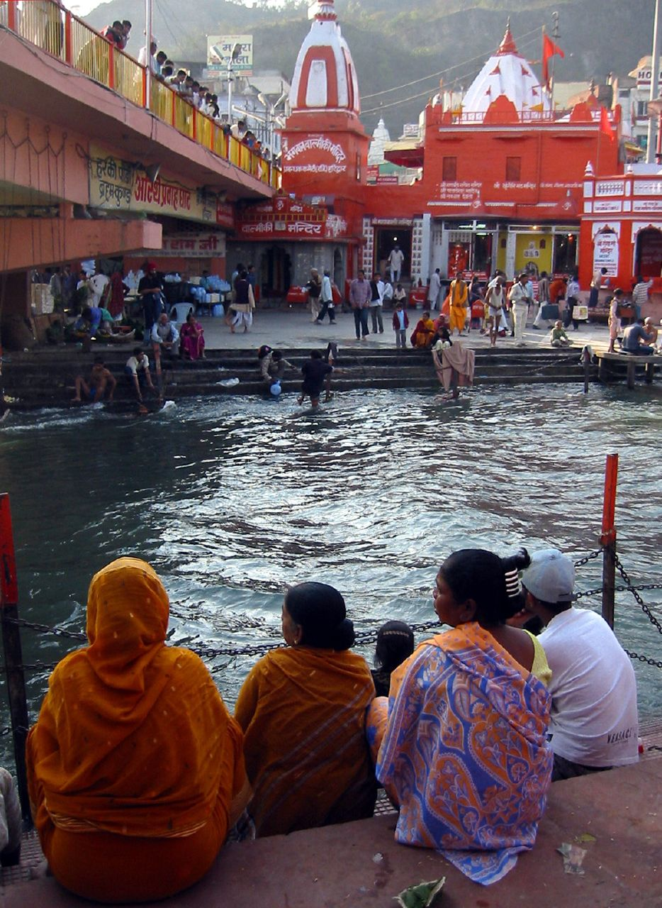
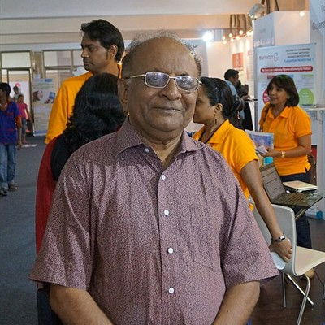

Born Out of Devotion, Dedicated to Devotees
Sacred Trails was founded on the sacred banks of the Holy Ganga in Haridwar by a small group of pilgrims who experienced firsthand how grueling, disorganized, and commercialized Indian pilgrimages had become.
Elderly parents were forced to endure chaotic queues, touts overcharged devotees for simple temple pujas, and finding clean, 100% Satvik food along Himalayan mountain trails was nearly impossible. We made a sacred vow to change this forever. Today, Sacred Trails has escorted over 25,000 yatris to India's most holy abodes with dignity, comfort, and deep spiritual fulfillment.

The Four Pillars of Sacred Trails
Every yatra we operate is anchored upon four ancient values of Sanatana Dharma.
Shraddha (Faith & Devotion)
Deep devotion and uncompromising respect for ancient temple traditions, sacred shlokas, and authentic Vedic rituals without shortcutting.
Seva (Compassionate Service)
Treating every devotee—especially our revered elders—as living embodiments of the divine. Compassionate, attentive, round-the-clock personal assistance.
Shuchi (Purity & Sanctity)
Strict spiritual and culinary purity. 100% vegetarian, Satvik meals prepared in sanitized dedicated kitchens without onion, garlic, or contamination.
Satya (Truth & Transparency)
Absolute transparency. No hidden charges, no sudden demand for pandit fees, no surprise costs. Honest pricing with genuine inclusions.
Our Spiritual Advisory Council
Guided by renowned Vedic scholars, mountain flight veterans, and senior healthcare doctors.

Acharya Vidyanand Shastri
Chief Vedic Rituals Director • KashiFormer faculty at Sampurnanand Sanskrit Vishwavidyalaya. Oversees all puja sankalps, Rudrabhisheks, and ensures rituals adhere to traditional Agamas.
Capt. Devendra Rawat (Retd.)
Himalayan Flight Operations ChiefVeteran Army Aviation helicopter pilot with 4,500+ hours in Himalayan terrain. Manages Kedarnath & Badrinath charter flights with impeccable safety.
Dr. Ananya Swaminathan
Senior Health & Altitude Medicine HeadSpecialist in geriatric medicine and high-altitude pulmonary conditions. Designs pre-yatra medical screenings and leads our mobile medical kits.
Pandit Rajesh Sharma
South Indian Temple Trust LiaisonCoordinates directly with TTD Tirumala, Madurai Meenakshi, and Rameswaram authorities for seamless VIP darshan protocols and theertham snan.
Preserving the Sanctity of Our Sacred Dhams
Sacred Trails donates 2% of every yatra booking toward Himalayan trail cleaning and river rejuvenation. We supply 100% biodegradable puja kits, zero single-use plastic water jugs, and support local temple village artisans along our yatra routes.